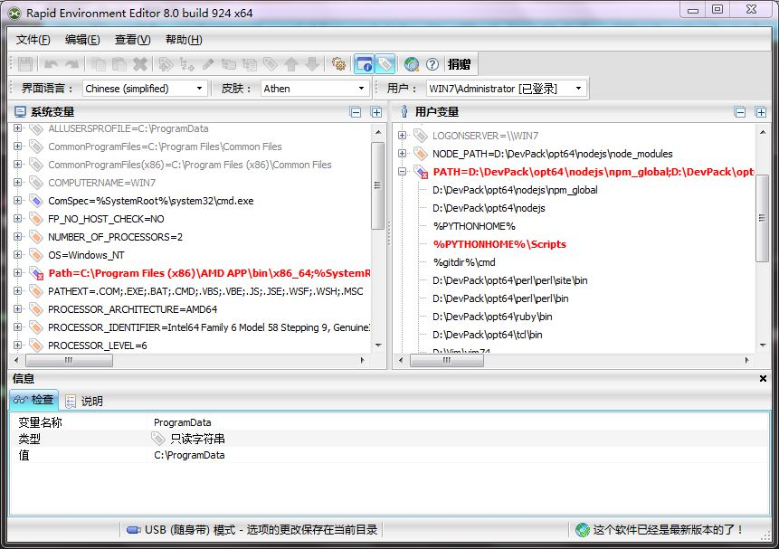
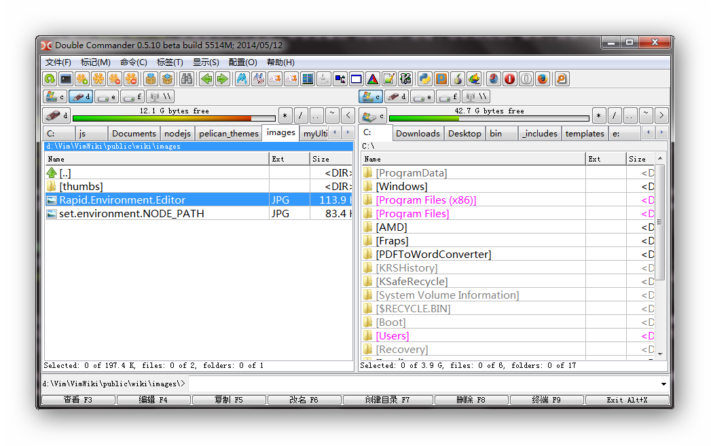

关于这个问题，网上的文章特别多，但很多都是重复的、过时的、无效的。但此问题是确确实实可以实现的，因为不少软件在安装的时候就会修改环境变量，安装完成后，这些修改就立马生效了。本文就介绍一下作者解决此问题的亲身经历及体会。
作者为了搭建 node.js 及 npm 工作环境（搭建过程见：如何在 Windows7 下搭建绿色便携的 node.js 及 npm 工作环境），需要修改 PATH 环境变量，并添加一个新的环境变量。下面就仅以 PATH 变量为例来做介绍。
用软件 Rapid Environment Editor 来修改
这是我的系统已经装有的一个软件，可以快速修改 Windows 的系统环境变量和用户环境变量。它具备对环境变量进行编辑、添加、删除、排序、备份，以及清理无效路径的功能。软件界面如下（红色表示该路径不存在或无权访问，灰色表示系统的关键环境变量）：

我用此软件修改完 PATH 环境变量（为保险起见，也为了做个对比，我在用户环境变量的 PATH 变量和系统环境变量的 PATH 变量中都作了修改），并点“保存”后，打开新的 cmd 命令行窗口，运行 echo %PATH%，发现修改并未生效，即使是重启 explorer 进程，也依然 无效 。看来，此软件除了上述功能外，也没什么强力之处。
直接修改注册表
既然第三方软件修改无果，那我就直接拿注册表开刀呗，心想着这总应该能成吧。注册表中有三个项保存着环境变量的信息，它们分别是：
HKEY_CURRENT_USER\Environment保存着用户环境变量的信息HKEY_LOCAL_MACHINE\SYSTEM\ControlSet001\Control\Session Manager\Environment保存着系统环境变量当前的信息HKEY_LOCAL_MACHINE\SYSTEM\CurrentControlSet\Control\Session Manager\Environment和上面第二个一模一样，实际就是指向上面第二个的链接HKEY_LOCAL_MACHINE\SYSTEM\ControlSet002\Control\Session Manager\Environment保存着系统环境变量上一次的信息
我用 Registry Workshop（这个软件比系统自带的 regedit 好用多了） 打开注册表，发现上面前三个的 PATH 键中已经保存着我之前用 Rapid Environment Environment 所做的修改，我就索性把第四个的 PATH 键值也给改了，然后打开新的 cmd，运行 echo %PATH%，发现修改仍未生效，再次重启 explorer 进程，再一次 失败了 。
计算机->属性->高级系统设置->环境变量
那就回归到最原始、最简单的方法中来吧，在“计算机“右键菜单->“属性”->“高级系统设置”->“环境变量”中修改完 PATH 变量后，一路点确定，然后打开新的 cmd 窗口，运行 echo %PATH%，发现 修改竟然生效了 。我无语了，原来 有时候最简单的方法却是最有效的 ，之前把问题想复杂了，所以没有一开始就用这个方法。
注意：修改完环境变量后，必须要通过“开始菜单”->“附件”->“命令提示符”或者“运行”对话框（可用快捷键 Win+R 打开）打开新的 cmd 窗口，才能看到生效了的环境变量。换句话说，只有在修改完成之后开启的进程，才能加载修改过的环境变量。而那些修改发生之前就已经在运行的进程，它们加载的仍然是修改之前的环境变量值，只要它们不退出，由它们开启的子进程所加载的也很有可能仍然是修改前的环境变量值。
举个例子来说明：你先打开了 Double Commander（一款功能类似 Total Commander 的开源免费跨平台的文件管理器，界面如下图所示），然后修改了 PATH 环境变量，再通过 Double Commander 运行了一个 cmd 窗口，在里面运行 echo %PATH%，你会发现改动没有生效。只有先退出、再打开 Double Commander，然后通过它运行的 cmd 窗口，才会加载改动后的 PATH 变量值。

结论
- 不重启或注销 Windows7 系统而使环境变量的修改能生效的方法是：在“计算机“右键菜单->“属性”->“高级系统设置”->“环境变量”中修改，然后一路点确定直到关闭了“系统属性”对话框。
- 修改环境变量后，如果该环境变量影响的是应用程序，那么只需要重启该程序即可生效。但是，如果影响的是系统服务，就必须重启系统才能将环境变量的修改反映到系统服务中。
本作品由 Yysfire 创作，采用 进行许可。转载时请在显著位置标明本文永久链接：
进行许可。转载时请在显著位置标明本文永久链接：
http://yysfire.github.io/windows/How_to_modify_environment_variables_and_take_it_effect_immediately_without_reboot_or_logout_Windows7.html